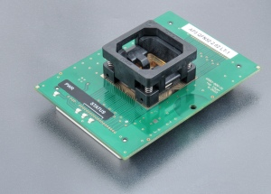
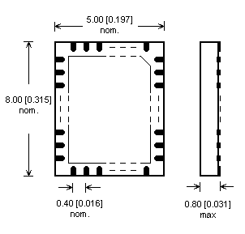

AP3 QFN52-2.02 LT-1
(Ord. no. 73-6581)
Price: 541.00 € excl. VAT
- specialized programming module for Analog Devices/Linear Technology LTC3888 devices in QFN52 package
- operating (mechanical) warranty of ZIF socket - 10,000 actuations
- supported from PG4UW software version 3.85c
- made in Slovakia
| Ord. no. | 73-6581 |
| Socket | ZIF QFN52, OpenTop type |
| Bottom | 2 connectors by 68 pins, receptacle type |
| Class | Specialized |
| Subclass | other |

Adapter manual
- Programmer don`t need to be switched off and SW can be running during inserting/removing programming module
- Protect the contacts of module connectors and ZIF socket from contamination. Any dirt and/or fat on contacts may cause errors during programming.
- Proceed with care! Incorrect insertion of device in module ZIF socket may lead to programmed device damage.
- Unscrew knurled thumb screw. Insert programming module into Programming Module Interface connectors, until it clicks. Due to connectors shape, only one orientation and position of programming module in Programming Module Interface connectors is possible. Screw knurled thumb screw to fix programming module to programmer.
- Push the cover of module ZIF socket (the topmost movable part) to open the socket. Insert the device into module ZIF socket. Correct position of programmed device in module ZIF socket is indicated by picture near (usually on left) the module ZIF socket. On that picture, reference corner of device (e.g. position of pin 1) is indicated by dot, by number 1, by bevelled corner or by any combination of mentioned. Then release module ZIF socket.
- The cover must be fully actuated (depressed) before inserting a device into the socket. If device is inserted into only partially opened ZIF socket, then - after releasing of cover – device pins might get damaged.
- Do not press on device while inserting it and/or releasing the cover.
- Visually check the placement of programmed device in module ZIF socket. If everything looks OK, the device is ready for programming.
- To take out the device from module, push the cover of module ZIF socket and remove the device.
- When you finish the work with module, unscrew knurled thumb screw and remove the module from Programming Module Interface connectors.
- Operating conditions: temperature 5°C ÷ 40°C (41°F ÷ 104°F), humidity 20% ÷ 80% non-condensing
Accepted package(s)
QFN52


Useable for programmers
Note: This programming adapter / module may not support all devices in the package(s) mentioned above on your programmer. Please, verify situation for particular device(s) you are going to work with using actual Device list of your programmer.